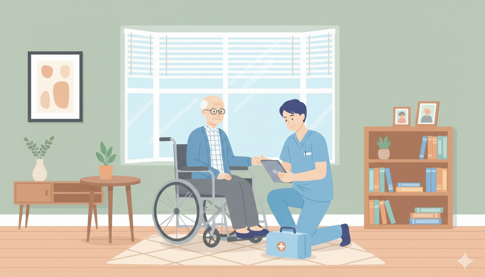
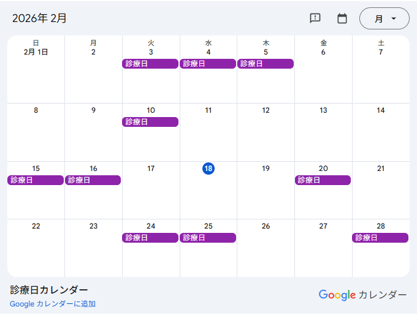
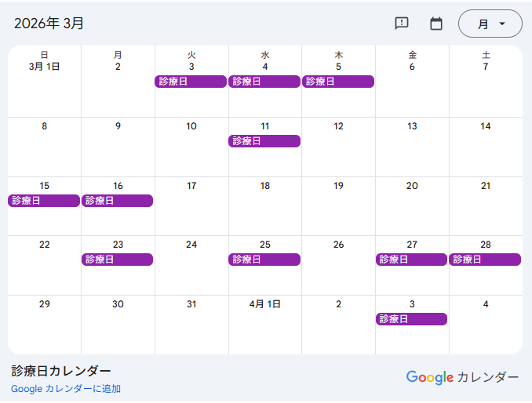

イベント1のお知らせ

イベント1サンプルテキスト
イベント1サンプルテキスト
Home Care
逗葉地域在宅医療・介護連携相談室は、逗子市・葉山町の皆様が安心して在宅医療を受けながら生活を送れるよう支援する窓口です。専門の看護師が対応いたします。
Coordination Office
概要のサンプルテキストXXXXXXXXXXXXXXXXXXXXXXXXXXXXXXXXXXXXXXXXXXXXXXXXXXXXXXXXXXXXXXXXXXXXXXXXXXXXXXXXXXXXXXXXXXXXXXXXXXXXXXXXXXXXXXXXXXXXXXXX
概要のサンプルテキストXXXXXXXXXXXXXXXXXXXXXXXXXXXXXXXXXXXXXXXXXXXXXXXXXXXXXXXXXXXXXXXXXXXXXXXXXXXXXXXXXXXXXXXXXXXXXXXXXXXXXXXXXXXXXXXXXXXXXXXX
News & Events

イベント1サンプルテキスト
イベント1サンプルテキスト
令和７年度「もしバナ」ワークショップを開催いたします。ご興味がある方ご連絡をください。
平日 ８：３０～１７：１５
電話 ０４６-８７０-１０７０
イベント2のお知らせサンプルテキスト
イベント2のお知らせサンプルテキスト
Calendar


Consultation & Support
逗葉医師会在宅医療相談窓口・逗葉歯科医師会・地域歯科医療連携室及び逗葉薬剤師会対応薬局等と密に連携し、最適なサポート体制を整えています。
医療依存度の高い方が退院される際、病院と連携してスムーズに在宅療養へ移行できるよう、関係機関との調整や支援を行います。
地域包括支援センターやケアマネジャー等からの、医療ニーズの高い利用者に関する相談や、医療全般にわたる専門的な支援・アドバイスを行います。
| 受付曜日 | 月曜日 〜 金曜日 （土日祝・年末年始 12/29〜1/3 を除く） |
|---|---|
| 受付時間 | 午前 9:00 〜 午後 5:00 |
| 相談方法 | 基本的には電話でのご相談に対応いたします。 相談内容に応じて、来所での相談や、医療機関・事業所等へ訪問することも可能です。事前にご連絡下さい。 |
Local Counters